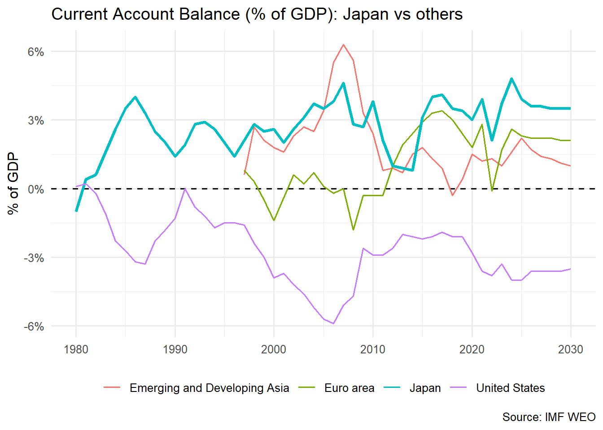
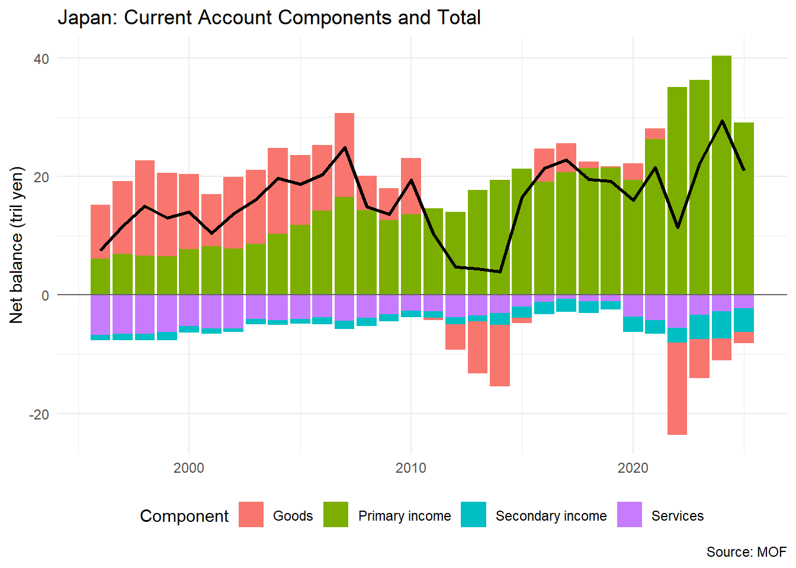
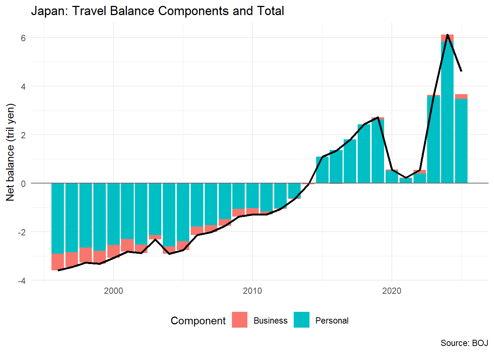
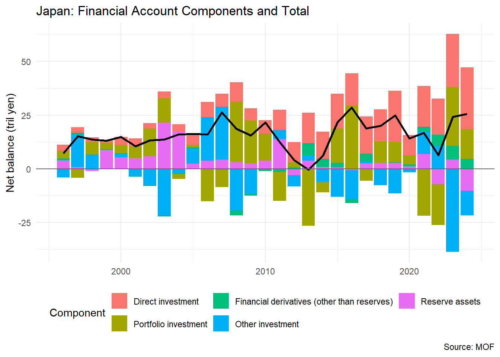
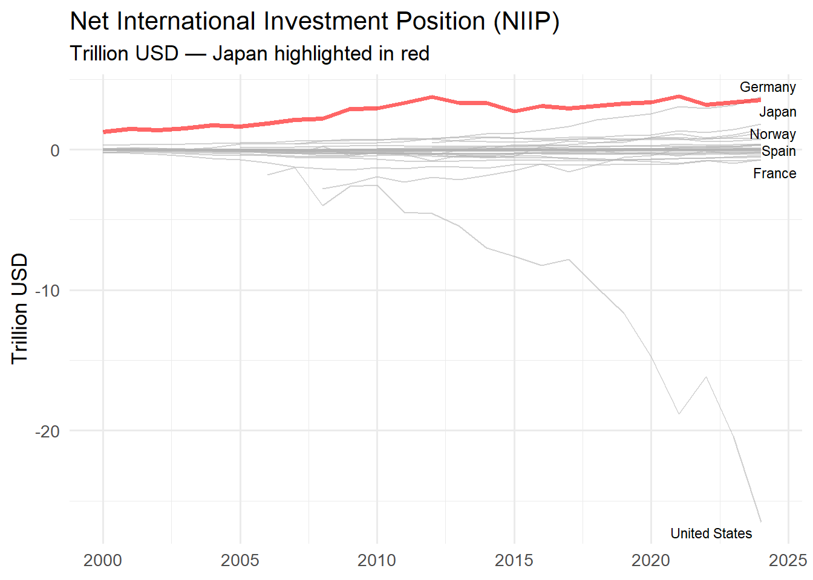

Balance of Payments: Accounts and Japan’s External Position
Introduction
- classify a cross-border transaction into the current, capital or financial account
- explain why current + capital account = net lending = financial account (up to errors and omissions)
- distinguish a flow (financial account) from a stock (NIIP) and read Japan’s figures for both
- explain why a weaker yen can raise Japan’s NIIP without any transaction taking place
The balance of payments
The balance of payments records transactions between residents and nonresidents over a period.
- Current account records trade, income, and current transfers.
- Capital account records capital transfers and transactions in certain nonfinancial assets.
- Financial account records transactions in external financial assets and liabilities.
Current account
- Goods — a Japanese firm exports machinery or imports fuel.
- Services — a visitor from abroad pays for a hotel in Japan. Japan records a service export.
- Primary income — a Japanese investor receives dividends on shares in a foreign company.
- Secondary income — a resident of Japan sends money as a gift to family living abroad.
Capital account
- Capital transfers include debt forgiveness. If Japan’s government forgives a loan owed by a foreign government, Japan records a capital transfer paid and a reduction in its external loan assets.
- Nonproduced nonfinancial assets include certain rights. A Japanese company buying ownership of an existing trademark from a nonresident records the acquisition here.
Financial account
- External assets are financial claims that residents hold on nonresidents. A Japanese resident buying a foreign bond increases Japan’s external assets.
- External liabilities are financial claims that nonresidents hold on residents. A foreign investor buying a newly issued Japanese government bond increases Japan’s external liabilities.
- Reserve assets are external assets held by the monetary authorities. They are part of the financial account.
Sign convention: net lending (IMF BPM6)
- Current and capital account: the balance is credits minus debits. Exports are credits and imports are debits
- Financial account: an increase in assets is +, an increase in liabilities is + in the liabilities column, and net lending = change in assets - change in liabilities
- So a surplus in CA + KA is matched by a positive financial account balance: the country is a net lender
- Older textbooks (BPM5 style) record asset increases as debits, so the financial account has the opposite sign and the three accounts sum to zero
Three transactions, one identity
| Transaction | Current account | Financial account entry |
|---|---|---|
| Machinery export paid into a foreign bank account | +¥1m | Foreign deposit +¥1m |
| Clothing import bought on credit | −¥100k | Trade credit liability +¥100k |
| Hotel stay paid into a foreign bank account | +¥100k | Foreign deposit +¥100k |
Net lending equals the current account entry. The trade credit liability contributes −¥100k to net lending.
- In every row the current account entry is matched by a financial account entry of the same size, so net lending from CA equals net lending from FA.
- Row 2: the liability is a negative for net lending because net lending = change in assets - change in liabilities.
Relationships between the accounts
- Net lending to the rest of the world: CA + KA
- Financial account: net acquisition of external financial assets minus net incurrence of external liabilities
- Identity: CA + KA = FA - E&O
- BoP is the country’s external budget constraint: a surplus in CA + KA means net lending to the rest of the world and a deficit means net borrowing
Why does Japan run surpluses? Saving and investment
\[ CA = S - I \]
- \(S\): national saving, \(I\): domestic investment
- A CA surplus means the country saves more than it invests at home, and the excess contributes to net lending abroad
- So the CA is a macro outcome, not only a trade outcome: high household and corporate saving relative to domestic investment opportunities
- This is the link to the last lesson: aging changes S, so it changes the CA.
Japan’s Current Account
- Balanced (0 percent) during the Bretton Woods regime
- yen was fixed to the US dollar at 360 yen/dollar (1949-1971)
- negative during the boom years and positive when domestic growth slowed
- Surpluses often in the 1970s and consistently since 1981: income surplus
Japan’s current account components

- Service trade always deficit: important driver is international tourism balance, run large deficits but turned positive in 2015.
- Net exports of goods replaced by primary income (i.e., interest and dividends from external assets) after 2007
- Large trade deficit in 2011: natural gas to generate electricity aftermath of earthquake and nuclear plants shutdown
- Large trade deficit in 2022: high energy import costs due to the war in Ukraine and the depreciation of the yen making imports more expensive
International Tourism and Travel Balance

Japan’s financial account components

- A current account surplus typically corresponds to positive net lending in the financial account
- Composition Dominated by direct investment and portfolio assets. Shift from lending (1980s) → equity ownership (post-2000).
- Net direct investment has increased steadily
- Net portfolio investment abroad has been very volatile
- in 2011: partly due to Japanese insurance companies’ repatriation of assets to pay for insurance reimbursements
- Official reserve: MOF (BOJ being its agent) occasionally intervened in the foreign exchange market to buy the US dollar (and sell the yen)
- net external assets increase in 2003–2004 and 2011
Reserve assets: the official part of the financial account
- Reserve assets are foreign assets held by the authorities (MOF decides, the BOJ acts as agent)
- When the authorities buy dollars and sell yen to influence the exchange rate, reserve assets rise: this is a financial account entry
- Unlike private flows, reserve changes are a policy decision
- Details of intervention (why, when, sterilization, accords) are in the exchange rate lesson.
From flow to stock
Net international investment position (NIIP) is external assets minus external liabilities at a point in time.
\[ \begin{aligned} \text{Closing NIIP} &= \text{Opening NIIP} + \text{Net lending} \\ &\quad + \text{Revaluation} + \text{Other changes} \end{aligned} \]
In the IMF example, 469 + 10 + 8 + 0 = 487. The financial account adds 10. Changes in prices or exchange rates add 8.
Japan’s NIIP

- Level Japan has one of the world’s largest positive NIIPs (~US$3–4 trillion, >80% of GDP 2024).
Reflects decades of current account surpluses and outward FDI. (US: -90% of its nominal GDP 2024) - Resilience Stable external position despite aging and yen fluctuations.
Suggests strong net creditor status and global financial reach.
Japan as a mature creditor
A stylized path:
- Growth era: current account roughly balanced, limited by foreign reserves
- Trade-surplus era: goods surplus drives the CA; outward FDI and portfolio investment build external assets
- Mature creditor: returns on those assets (primary income) rival or exceed the goods balance; the CA stays in surplus even when goods trade is in deficit (e.g., 2011, 2022)
- The current account components chart shows how primary income offsets the goods deficit.
- Japan’s external position is now sustained by the return on past saving, not only by exports.
Valuation and the yen
Toy example:
- Japan holds US$1 trillion of foreign assets and has no foreign-currency liabilities
- At ¥100/$: assets = ¥100 trillion
- At ¥150/$: assets = ¥150 trillion
- +¥50 trillion in the yen value of NIIP, with no transaction at all
- Much of Japan’s external assets are in foreign currency, while a larger share of its liabilities is in yen, so a weaker yen tends to raise NIIP measured in yen
- In dollar terms nothing changed: say that explicitly, because NIIP is reported in different currencies in different sources (USD in the OECD chart, yen in MOF data).
- Link to 2022: the yen’s depreciation raised the yen value of foreign assets while making imports more expensive. The same exchange rate move hits the two sides of the balance sheet and the trade balance in opposite directions.
Who supplies and demands yen?
- When exports are invoiced in dollars, the conversion happens at the firm or bank level, but the logic is the same: every BoP line is ultimately a demand or supply of yen.
- The exchange rate is the price that clears these flows (together with expectations, interest rates, and official intervention).
Discussion questions
- If aging households start drawing down savings, what happens to \(S - I\), to the current account, and to NIIP over time?
- In years when Japan’s goods trade is in deficit, which line of the current account keeps it in surplus?
Appendix
Worked balance-of-payments example
- in the definition that existed prior to 2014, what is known today as the financial account was called the capital account
- Current account:
- export and import of goods and services,
- investment income and unilateral transfers such as foreign aid
- Capital account:
- transactions in nonproduced, nonfinancial assets, such as land
- unilateral capital transfers, such as government debt forgiveness
- Financial account: cross-border transactions of assets (other than nonproduced, nonfinancial assets): capital inflow and outflows
- acquisition of a business (direct investment)
- acquisition of financial products for asset management (portfolio investment)
Remittances
- “Net” compensation of employees (#5): #1 minus the sum of #3 and #4
- Personal remittances: #2 plus #5 plus #6
- Total remittances: #2 plus #5 plus #6 plus #7
- Total remittances plus transfers to NPISHs: #2 plus #5 plus #6 plus #7 plus #8 plus #9
Detailed international investment position example
- The financial account records a country’s flow of international transactions in assets and liabilities over a period, while the net international investment position (NIIP) is a stock measure of its total external assets and liabilities at a specific point in time
- The financial account’s transactions, such as buying or selling stocks and bonds, directly contribute to changes in the NIIP from one period to the next, along with changes in asset values due to exchange rates and market price movements